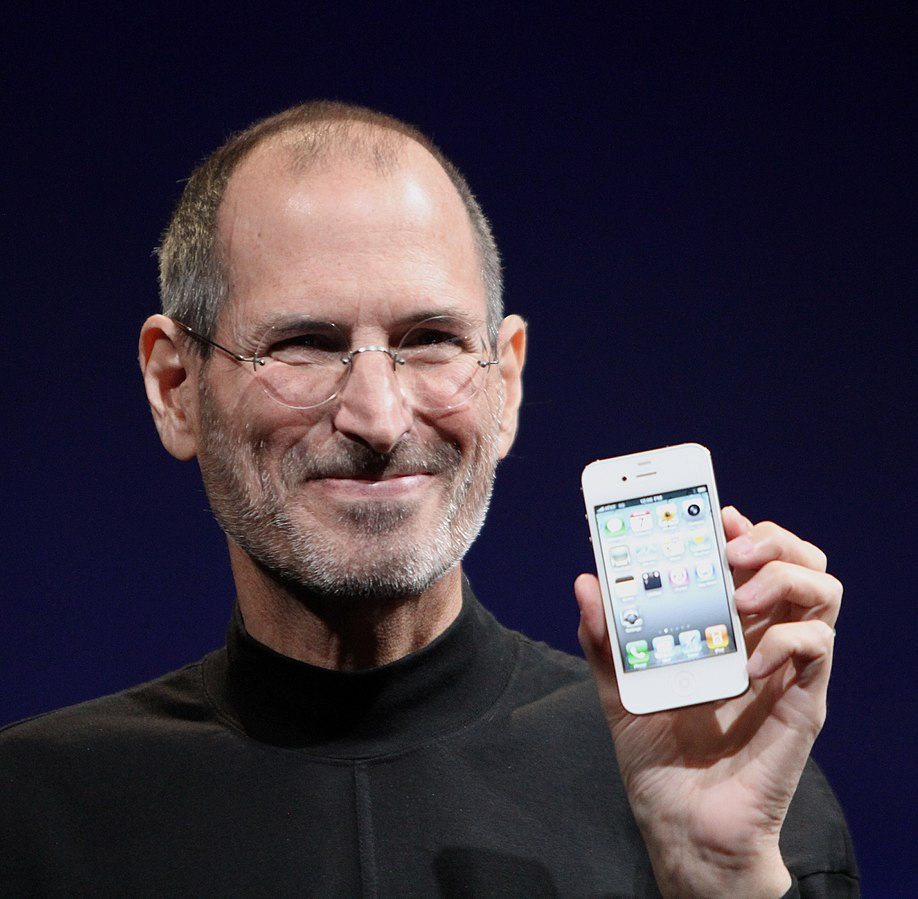

Apple Inc. (колишня Apple Computer, Inc.) — американська технологічна компанія з офісом у Купертіно (Каліфорнія), яка проєктує та розробляє побутову електроніку, програмне забезпечення й онлайн-сервіси.
Є першою американською компанією, чия капіталізація перевершила 1 трлн доларів США. Це сталося під час торгів акціями компанії 2 серпня 2018 року.[10] Цього дня компанія також стала найдорожчою публічною компанією за всю історію, обійшовши капіталізацію попереднього рекордсмена — компанії PetroChina (1,005 трлн доларів у листопаді 2007 року). У середині серпня 2020 року капіталізація Apple виросла до 2 трлн дол.[11] 3 вересня 2020 року ціна компанії різко впала — на 8% (180 млрд), що стало рекордом для фондового ринку, але все одна вартість була більшою за 2 трлн. дол.
Про компанію
Розроблене компанією програмне забезпечення включає операційні системи OS X та iOS, медіа-плеєр iTunes, веб-браузер Safari та застосунки iLife та iWork. До онлайн сервісів належать iTunes Store, iOS App Store, Mac App Store та iCloud.
Apple була заснована Стівом Джобсом, Стівом Возняком та Рональдом Вейном 1 квітня 1976 з метою розробки та продажу персональних комп'ютерів. Її було зареєстровано як Apple Computer, Inc. 3 січня 1977 і було перейменовано на Apple Inc. 9-го січня 2007, щоб відобразити зміну її пріоритетів у бік побутової електроніки. Apple було включено до індексу Dow Jones Industrial Average 19 березня 2015.
Apple — це найбільша у світі компанія в області інформаційних технологій за виручкою, найбільша у світі технологічна компанія за обсягом активів і третій найбільший у світі виробник мобільних телефонів. 25 листопада 2014, на додаток до того, що вона найбільша публічна корпорація у світі за капіталізацією ринку, Apple стала першою компанією у Штатах, вартість якої перевищила 700 мільярдів $ США. Компанія наймає 115 000 працівників на постійній основі станом на липень 2015 і має 453 магазини роздрібної торгівлі у шістнадцяти країнах на березень 2015 року. ITunes Store — найбільший у світі музичний магазин.
Історія
Apple заснована в Каліфорнії 1 квітня 1976 року Стівом Джобсом, Стівом Возняком та Рональдом Вейном, які зібрали в середині 1970-х свій перший персональний комп'ютер на базі процесора MOS Technology 6502 — Apple I. Продаж розпочався в липні 1976 року за ціною $666.66 (за сьогоднішнім курсом приблизно $2,5 тис.).
«Apple I» був не першим комп'ютером, який програмувався. Право першості належало комп'ютеру Altair 8800, який був створений аматором і розповсюджувався через каталоги у 1974 році. Однак, Альтаїр не був технічно кваліфікований як «персональний комп'ютер», оскільки не давав можливості накопичувати та викликати дані за допомогою програм користувача.
Стів Джобс - Наприкінці 1970-х та на початку 1980-х років Apple II, випущений 16 квітня 1977, був найпоширенішим у світі персональним комп'ютером того часу. Він мав кольорову графіку та відкриту архітектуру, як пристрій зберігання використовувались не касети з магнітними стрічками, а магнітні диски. Було продано більше 5 млн комп'ютерів «Apple II».
До пристроїв, що розробляються компанією належать
- смартфон iPhone;
- планшет iPad;
- персональний комп'ютер Mac;
- портативний медіа-плеєр iPod;
- і розумний годинник Apple Watch.
1981—1985: Lisa та Macintosh
Над Apple Lisa Стів Джобспочав працювати ще в 1978, але був виключений з колективу через боротьбу й прийняв дешевий комп'ютерний проект Джефа Рескіна, Macintosh. У 1983 гонку виграла Lisa, але через високу ціну її виробництво зупинилося. Після цього, в 1984 році, фірма Apple вперше представила новий 32-розрядний комп'ютер Macintosh, перший комерційно успішний персональний комп'ютер, що базувався на графічному інтерфейсі та використовував мишу замість інтерфейсу командного рядка. Спочатку Макінтош мав успіхи у збуті, але наступні продажі вже не були такими сильними. Причина цьому — знову ж висока ціна. Доля комп'ютера змінилася після впровадження LaserWriter, першого лазерного принтера, та PageMaker, раннього пакета настільної видавницької системи. Основною перевагою Мас був революційний на цей час графічний інтерфейс. В березні 1981 року Возняк потрапив у авіакатастрофу і тимчасово відсторонився від роботи. Проблеми з продажем «Apple III» призвели до того, що Джобсу довелось звільнити 40 співробітників. В пресі ходили чутки про близький кінець компанії «Apple». На початку 1983 року Джобс, через власну нездатність впоратись з проблемами, запросив на посаду головного виконавчого директора компанії Джона Скаллі, який в той час обіймав аналогічну посаду в PepsiCo. В квітні 1983 року Скаллі розпочав роботу на новій посаді. Стів Джобс (фото ниже)

переживав провали компанії як власні, тому між ним та Скаллі виникали непорозуміння. В 1985 році президент США Рональд Рейган нагородив Джобса та Возняка медалями за розвиток технічного прогресу.